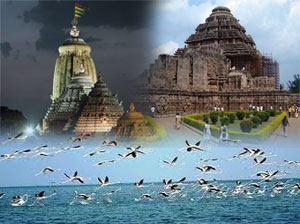

Odisha Temples & Tribes Tours
Eastern Golden Triangle Tours
Olive Ridely Tours
Adventure Tour to Odhisa
Odisha Tours
Best of Odisha Buddhist Tours
Romantic Konark & Puri Tours
Destination Covered : Bhubaneshwar, Konark & Puri.
Tour Duration : 04 Nights / 05 Days.

Day 01 :Arrival at Bhubaneshwar
Short sightseeing of Bhubaneshwar as the city is known as the city of temples. We will take you to Ling Raj Temple, Mukteshwar Temple, Parashurameshwara Temple and Handicrafts Museum.
Day 02 :Bhubaneshwar - Puri
Morning after having leisurely breakfast at the Hotel. We will take you Nanad Kanan Biological Park which is worth visiting. Proceed to Puri en route visit to artisan village called “Pipli†where you can shop for some of the best authentic handicrafts. Continue your journey & reach hotel. Check in formalities with welcome Coconut water. Dinner and Overnight Stay at Hotel.
Day 03 : In Puri
After having leisurely breakfast at the Hotel. Visit to Shri Jagannath Temple. The temple is an important pilgrimage destination for many Hindu traditions, particularly worshippers of Krishna and Vishnu, and part of the Char Dham pilgrimages that a Hindu has to be visited in one's lifetime. After wards we will take you to Balighai Beach – The Casuarina Fringed Beach which is just 8 kms away form Puri. The Beach is uniquely located at the Bay of Bengal and river Nuanai. This Odisha (Orissa) beach is well known for its scenic natural beauty and calm environment. The booming and isolated coastline is simply awesome and refreshing particularly among honeymoon couple. One can spend hours together with Cashew and Coconut trees.
Day 04 : Puri - Excursion to Konark
Post breakfast proceed for an excursion tour of Konark. Visit the world famous Konark Sun Temple also known as Black Pagoda. The temple is a World Heritage Site. It takes the form of the chariot of Surya (Arka), the sun god, and is heavily decorated with stone carving. The entire complex was designed in the form of a huge chariot drawn by seven spirited horses on twelve pairs of exquisitely decorated wheels. The entrance is guarded by two lions, which are each shown crushing a war elephant. Each elephant in turn lies on top of a human body. The temple symbolises the majestic stride of the Sun god. Relax at breathtaking Konark Beach. Evening - Return back to the Hotel at Puri.
Day 05 : Puri - Bhubaneshwar - Departure
Pack your bag & baggage and drive to Bhubaneshwar and from there transfer to your onward destination at the end of your memorable Odisha (Orissa) Honeymoon Tour.